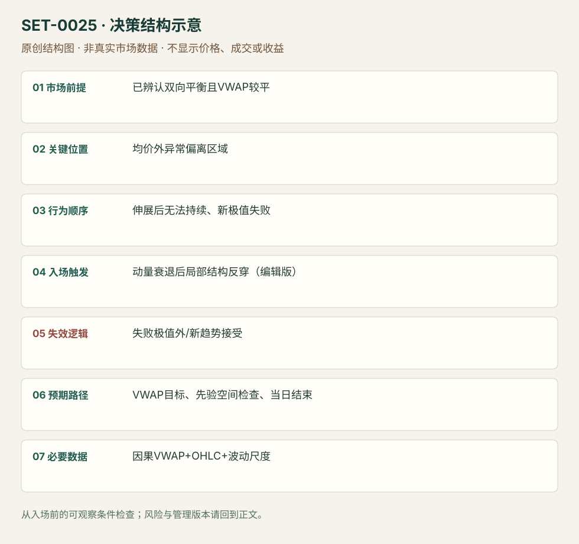

平衡日的 VWAP 过度偏离回归
Flat VWAP Stretch Fade · SET-0025 · reviewed · v1.0.0
盈利证据：not_established。审查范围与来源版本见第13节；未知字段保留缺失原因。
1. 名称与快速概览
在价格反复围绕均价、VWAP较平的平衡日，过度偏离伴随延续衰弱时，逆向捕捉回到均价。偏离本身没有入场信息，不能在趋势日不断加仓反向。
记录口径：PA supporting；必要数据 OHLC、volume、VWAP。名称性质：编辑性描述名，英文保留来源术语以便检索。reviewed 只表示本条规则与证据记录审查通过，盈利状态为 not_established。
2. 本质与行为假说
假说是平衡环境的额外偏离缺少新的持续接受，因而回到成交中心。水平VWAP只是状态代理，仍须检查日内高低是否扩张及信息是否改变。
3. 适用市场与环境
均价斜率小、价格双向轮转、没有持续新消息重新定价。来源没有通用“过度”数值；需要按品种与同一时刻波动研究阈值。
来源实用市场：指数期货（教育规则）、S&P500期货（回顾研究）。
Session：美股/ES现金参考段 09:30–16:00 America/New_York；收盘前平仓。期货夜盘单独建背景，不将其并入开盘区间。
跨市场：本版不主张已经验证的跨市场迁移；更换市场必须重定数据来源、流动性与session。
4. 出现前的观察清单
记录因果VWAP、当时波动尺度与既有范围；判断是否已有连续趋势和价值迁移。选定何种衰退确认及最大允许偏离，禁止使用最终当天最高偏离作为条件。
5. 形成过程与状态转换
平衡成立 → 单侧远离均价 → 新极值无法继续/恢复失败 → 反向价格确认 → 回到均价或极值外失效。
6. Entry trigger 与执行方式
来源给过度伸展与动量衰退，本库编辑执行版为新极值失败后跌破最后局部上升低点做空（下侧对称）；没有结构确认只因距离大进入是更早假设版，单独测试。
7. Invalidation 与止损逻辑
失败极值之外固定缓冲；继续扩张且均价开始同向倾斜时取消原平衡假说。没有有限结构边界的样本不入场；不可用加仓摊低代替失效退出。
8. Exit、target 与 trade management
VWAP为首要目标；回归过程中出现新的接受区可提前处理。进入前检查目标距离与止损距离。收盘前平仓，未回到均价也结束。
9. 常见 variations
标准差带、百分比或ATR用于量化偏离是版本参数，不计新setup；不能将任意0.4%套所有产品。带上沿触碰限价版须独立测试衰退缺失的影响。
10. 失败方式与不交易条件
趋势日斜VWAP不断上移；新闻使价格中心改变；等待事后最高点才进入的回测；目标偏近但止损偏远；用无限补仓制造高胜率。
11. 与相近 setups 的区别
12. 图表与案例解读
视觉缺口：已查看 TradingSim 研究汇总图，但它是10次观察的收益柱图，不是可核对本条触发的价格案例，因此未计入真实图表覆盖。需要补充含入场前VWAP斜率和失败极值的完整日内图。
本地原创示意（VIS-000082，非真实市场数据）：

小屏阅读可打开原尺寸示意图并缩放。

此图用于对照识别顺序与风险定义；不计入真实案例覆盖率。
视觉材料元数据与查看范围
- VIS-000082 · synthetic_structure_diagram / illustration_only / generated_not_market_evidence
品种：未知/不适用；日期：未知/不适用；周期：未知/不适用；时区：未知/不适用
无真实品种、日期或价格：这是结构示意
13. 证据、分歧与未知项
NinjaTrader提供偏离均价的fade框架；TradingSim仅作尺度研究与限制背景，没有独立核验本条完整触发。两者均未证明此编辑版本盈利。TradingSim研究的事后最大偏离和“潜在平均收益”不构成真实入场回报；本库将其作为方法限制证据。
- [EVD-000046] NinjaTrader editorial team，《The Definitive Guide to VWAP Strategies for New Futures Traders》，SRC-0071；定位：Mean Reversion to VWAP / Risk management。支持：价格过度远离均价且动量衰退时反向，均价为目标、极值外止损；趋势环境会失败。
- [EVD-000047] Al Hill / TradingSim，《The VWAP Indicator Ultimate Guide And Video》，SRC-0022；定位：Chapter 8 Reason 5 / Chapter 11 S&P500 ES Study。支持：较平的VWAP与偏离提供均值回归背景；2018年研究取事后峰值偏离，不能直接当可执行策略。
- [EVD-000102] 编辑操作化，未测试：将平衡偏离的动量衰退用局部结构反穿触发；尺度、确认与buffer由使用者事先锁定，未测试。 原文边界：源文仅给偏离均价的fade框架和均价目标，没有这套统一局部触发参数。
审查修正：TradingSim偏离研究为背景而非本条完整触发核验，当前独立性为independent_context_only。
14. 可用于复盘的检查表
- ☐ 下单前的前提可核对：已辨认双向平衡且VWAP较平
- ☐ 事前标记位置：均价外异常偏离区域
- ☐ 行为按顺序出现：伸展后无法持续、新极值失败
- ☐ 实际触发符合选定版本：动量衰退后局部结构反穿（编辑版）
- ☐ 事先写明本次否定条件：失败极值外/新趋势接受
- ☐ 目标/路径只用当时已知信息：VWAP目标、先验空间检查、当日结束
- ☐ 数据满足 因果VWAP+OHLC+波动尺度；记录时间、点差、滑点、队列和未成交
- ☐ 记录截止平仓及规则偏离；正常亏损不事后改成“未成立”
15. 后续验证问题
平衡如何在入场前判断而不看全天形状？相同时间波动标准化能否替代固定百分比？成本后目标距离多少才可行？
双向相关导航
- SET-0024 VWAP 穿透、偏离失败与回测 0024 必须穿透和偏离均价后回测起点；本条在远离且平衡的外侧等衰退。
- SET-0038 当前低量伸展的失败反转回价值 0038 依赖旧价值分布与低量伸展，本条目标为动态成交均价并要求当日平衡。
- SET-0026 历史高成交日 VWAP 压力与量能断崖 0025 使用今天平VWAP并回到均价；本条历史高成交日线只是潜在供给参考。